§4 第四问：电价波动条件下的购电与储能优化调度
§4.1 问题分析
第二问与第三问均在确定性分时电价的前提下求解购电与储能调度：电价是已知的、分段常数的规则（尖峰、高峰、平段、谷段），日前 0:00 制定购电计划后，唯一的不确定性来自净负荷（负荷与光伏出力）本身。第四问的题设发生了实质性变化：附件 4 给出的是逐日、逐时段的实际波动电价 $V[d,t]$，其数值在不同日期之间没有固定周期规律，必须与净负荷一样被当作随机变量处理。这一变化把第四问从"单一不确定性下的调度优化"升级为"双重不确定性下的联合决策优化"，具体带来三个新困难：
（1）不确定性维度增加，且两类不确定性相互关联。 电价波动往往与系统净负荷的波动同源（例如同一天的极端天气会同时推高负荷、压低光伏出力、并抬升实时电价），若把价格和净负荷当作两个独立随机变量分别建模、再叠加决策，会丢失二者的联合分布结构——尤其是同涨同跌的相关性。因此第四问不能沿用"先假设电价已知，只对净负荷做鲁棒/随机处理"的思路，而必须在情景生成阶段就把价格与净负荷成对抽取，保留其历史相关性，形成真正的联合情景。
（2）决策的经济后果对价格实现路径高度敏感，非预期性约束的重要性显著上升。 在确定性电价下，"提前多存/少存一点电"的经济代价是固定可算的；而在波动电价下，同样的储能操作，其经济价值取决于未来若干小时电价的实际实现路径，而这条路径在决策时刻是未知的。同时，由于计划购电与调整购电的结算价、增购的 1.5 倍溢价、减购净额退款、紧急购电的 5 倍惩罚都直接与"交付时段的实际电价"挂钩，任何决策都不能提前预支还未发布的价格信息，否则会产生"先知式"决策，使模型结果失去可信度、也不符合实际调度中信息逐步释放的物理过程。这就要求模型显式地把信息集（filtration）和非预期性约束（non-anticipativity）写入规划层，而不是像确定性电价下那样可以隐式满足。
（3）Q4-2 与 Q4-3 两个分支在信息可调整能力上的差异，在价格波动下被放大。 第三问已经说明，允许日内在 6:00 / 12:00 / 18:00 三个时刻调整购电计划（Q4-3 规则）比只在 0:00 下达全天计划、日内无普通增减购通道（Q4-2 规则）具有更强的信息利用能力；但在确定性电价下，这种能力差异主要体现在"跟随负荷波动重新配置储能"上。在波动电价下，日内调整还能够响应价格本身的实现——比如在价格上涨前完成增购、在价格意外走低时顺势减购——因此 Q4-2 与 Q4-3 之间的差距在第四问中理应比前两问更大，这也是本章要重点检验的问题之一。
综上，第四问要求的模型必须同时满足：（i）用联合情景而非独立边缘分布刻画价格—净负荷的相关不确定性；（ii）用两阶段情景随机规划并显式嵌入非预期性约束保证决策的因果合法性；（iii）用终端库存价值函数把有限日历划分下的储能决策与未来连接起来，避免"日末清仓"式的短视；（iv）用参数搜索层处理规划层写不进去的非凸策略参数。第 4.4 节将逐层给出这些模型组件的完整数学描述。
§4.2 模型假设
| 序号 | 假设内容 | 理由 |
|---|---|---|
| H1 | 电价 $p_t^s=V[d,t]$ 在交付时段公布之前对决策者不可见，决策只能依赖截至当前决策时刻已经发布（已实现）的价格与净负荷信息 | 保证决策的因果性，避免"先知"式利用未来价格信息，这是第四问相对第二、三问新增的核心约束（4.4.1 节非预期性约束据此展开） |
| H2 | 计划购电、调整购电（增/减）均按交付时段的实际电价结算，而非下单（发布）时刻电价 | 与题面结算口径一致（BRIEF 结算口径），并作为全文统一主口径；下单时刻电价的读法仅作口径敏感性讨论（见 4.6.5 节第 5 条"结算口径敏感性"） |
| H3 | 允许无成本弃电，不允许向电网反向售电 | 与题设一致，简化电量平衡方程中弃电与购电的非对称处理 |
| H4 | 储能充、放电均遵循单向效率 $\eta=0.9$：电网侧每充入 $c$ kWh，库存增加 $\eta c$；库存每减少 $r/\eta$ kWh，向负荷侧释放 $r$ kWh | 符合电池储能单向损耗的通用建模惯例，使 SOC 动态方程线性、可直接嵌入 LP |
| H5 | SOC 全程不越过 $[E^{\min},E^{\max}]=[1200,10800]$ kWh 的安全区间，充、放电功率不超过额定功率 $\bar P=5000$ kW | 物理约束，来自题目给定的储能容量、功率与 SOC 上下限参数 |
| H6 | 情景层生成的联合情景按历史"同一天"成对抽取价格残差路径与净负荷残差路径，保留二者相关性；经 k-medoids 带权削减后用有限个代表情景（12 个）近似真实的连续分布 | 避免独立边缘抽样丢失相关结构（见 4.1 节困难 1）；情景数量需要在"分布近似精度"与"两阶段 LP 求解规模"之间折衷，12 个情景是本方法采用的削减规模 |
| H7 | 终端（日末）库存的继续价值用一个分段线性、边际非增的价值函数 $V(E)$ 近似，该函数通过一次 Bellman 回代拟合得到，并在评价期内固定使用 | 使有限日历划分下的短视问题得到缓解，同时保证该项可以精确嵌入 LP 而不引入整数变量（见 4.4.5 节的证明性说明） |
| H8 | Q4-3 的三个日内发布时刻（6:00 / 12:00 / 18:00）与 0:00 一起构成 4 个决策时点（epoch），即信息更新与再决策的时刻；Q4-2 只有 0:00 一个决策时点，此后购电计划不可更改（deviation 只能靠储能充放电、弃电与紧急购电吸收） | 对应题面两个分支的规则定义 |
| H9 | 影响策略表现的非凸参数（如 HYBRID 的 temper、shrink 系列、kappa、threshold、adj_premium，以及 Q4-2 的分位数 $\alpha$）的取值仅在 2025 年 1 月的三个滚动验证块上标定，并在评价期（2025-02-01—2025-12-31）顺序回放之前冻结，回放过程中不再更新 | 适应度只在 1 月窗口上计算，保证参数取值与评价期数据在时间上分离。但必须同时说明：这些参数的搜索范围以及模型结构本身，在本文的研制过程中曾结合历史全年回放的稳定性表现作过修订，属于人为设定的正则化约束。因此评价期结果不构成严格独立盲测，而主要用于比较候选策略在同一历史样本上的回放稳定性（见 4.6.5 节第 1 条、4.8 节） |
§4.3 符号说明
| 符号 | 含义 | 单位 | ||
|---|---|---|---|---|
| $d$ | 评价期内的日期序号，$d=1,\dots,334$ | — | ||
| $t$ | 日内时段指标，步长 10 分钟，$t=1,\dots,144$ | — | ||
| $\Delta t$ | 单个时段的时长（10 分钟） | 分钟 | ||
| $\tau_0,\tau_1,\tau_2,\tau_3$ | Q4-3 的四个决策时点（epoch），分别对应 0:00、6:00、12:00、18:00 | — | ||
| $s$ | 情景指标 | — | ||
| $\mathcal S$ | k-medoids 削减后的情景集合，$ | \mathcal S | =12$ | — |
| $\omega_s$ | 情景 $s$ 的权重（概率质量），$\sum_{s\in\mathcal S}\omega_s=1$ | — | ||
| $L_t^s$ | 情景 $s$ 下时段 $t$ 的净负荷（负荷减光伏出力后的净需求） | kWh | ||
| $p_t^s$（即 $V[d,t]$） | 情景 $s$ 下时段 $t$ 的交付时段实际电价 | 元/kWh | ||
| $B_t$ | 0:00 制定的全天购电计划（一阶段变量，不依赖情景） | kWh | ||
| $x_t^s$ | 情景 $s$ 下时段 $t$ 的最终有效购电量（计划量加调整量） | kWh | ||
| $\delta_t^{+,s}$ | 情景 $s$ 下时段 $t$ 的增购调整量（仅 Q4-3 非零） | kWh | ||
| $\delta_t^{-,s}$ | 情景 $s$ 下时段 $t$ 的减购（取消）调整量（仅 Q4-3 非零） | kWh | ||
| $c_t^s$ | 情景 $s$ 下时段 $t$ 的充电电量（电网侧计量） | kWh | ||
| $r_t^s$ | 情景 $s$ 下时段 $t$ 的放电电量（供负荷侧计量） | kWh | ||
| $g_t^s$ | 情景 $s$ 下时段 $t$ 的紧急购电量 | kWh | ||
| $u_t^s$ | 情景 $s$ 下时段 $t$ 的弃电量 | kWh | ||
| $E_t^s$ | 情景 $s$ 下时段 $t$ 末的储能库存（SOC） | kWh | ||
| $E_0$ | 日初（期初）库存 | kWh | ||
| $E_{144}^s$ | 情景 $s$ 下日末（期末）库存 | kWh | ||
| $E^{\min},E^{\max}$ | SOC 下、上安全限，取值 1,200 与 10,800 | kWh | ||
| $E_{cap}$ | 储能额定容量，取值 12,000 | kWh | ||
| $\bar P$ | 充、放电功率上限，取值 5,000 | kW | ||
| $\eta$ | 单向转换效率，取值 0.9 | — | ||
| $\mu^+$ | 增购溢价倍数，取值 1.5 | — | ||
| $\mu^-$ | 减购净额退款系数，对应"减购取消部分付 $0.5\times p$ 违约金" | — | ||
| $\lambda$ | 紧急购电倍数，取值 5 | — | ||
| $v_{E,ref}$ | 库存校正单价，取值 0.4125555556 | 元/kWh | ||
| $V(\cdot)$ | 分段线性、边际非增的终端库存价值函数 | 元 | ||
| $a_k,b_k$ | $V(\cdot)$ 第 $k$ 段的斜率与截距 | — | ||
| $\theta^s$ | 嵌入 LP 表示 $V(E_{144}^s)$ 的辅助变量 | 元 | ||
| $\alpha$ | Q4-2 分位法参数（主策略取值 0.675） | — | ||
| temper, shrink_net, shrink_price, kappa, threshold, adj_premium | Q4-3 主策略 HYBRID 的六个调参参数 | 各异 | ||
| $\text{Cash}$ | 一天（或全期）现金费用 | 元 | ||
| $\text{Cost}^{\text{inv}}$ | 库存校正费用 = 现金费用 + $v_{E,ref}(E_0-E_{144})$ | 元 | ||
| $\mathrm{CVaR}_{0.95}$ | 95% 置信水平的经验条件风险价值 | 元 | ||
| $C_{(i)}$ | 334 个等概率日费用降序排列后的第 $i$ 位统计量 | 元 |
§4.4 模型建立
§4.4.1 决策时序与信息集
Q4-2 与 Q4-3 都在每天 0:00 制定一份全天购电计划 $B_t\,(t=1,\dots,144)$；区别在于 Q4-3 允许在 6:00、12:00、18:00 三个额外的发布时刻，根据届时已经实现（发布）的信息，对尚未交付的时段重新决定增购/减购调整量 $\delta_t^{+,s},\delta_t^{-,s}$，而 Q4-2 在 0:00 之后再无调整通道，只能靠储能充放电、弃电与紧急购电吸收计划与实际净负荷、电价之间的偏差。
把 4 个决策时点记为 $\tau_0=1$（对应 0:00 前的时段起点）、$\tau_1=37$（对应 6:00，前 6 小时即 36 个 10 分钟时段）、$\tau_2=73$（对应 12:00）、$\tau_3=109$（对应 18:00）。信息集（filtration）$\mathcal F_{\tau_k}$ 表示截至决策时点 $\tau_k$ 已经公开、可用于决策的全部历史实现（净负荷、价格及此前的调整决策）。非预期性约束要求：在任一决策时点 $\tau_k$ 做出的、覆盖 $[\tau_k,\tau_k+36)$ 这一"前视 6 小时锁定窗口"的决策，对所有仍与 $\mathcal F_{\tau_k}$ 一致的情景必须取相同的值，即不能因为情景 $s$ 与 $s'$ 在锁定窗口之后的实现不同，就让锁定窗口之内的决策提前分叉。用符号写出（Q4-3）：
对 Q4-2，由于根本不存在调整通道，(4-1) 退化为对全天所有 $t$ 恒有 $\delta_t^{+,s}\equiv\delta_t^{-,s}\equiv 0$；但储能充放电 $c_t^s,r_t^s$、紧急购电 $g_t^s$、弃电 $u_t^s$ 仍然是逐情景的实时反馈变量（recourse variables），可以随情景内已实现的净负荷、价格瞬时调整——这一点在 4.6.5 节会重申，以避免"Q4-2 完全没有 recourse"的误解。
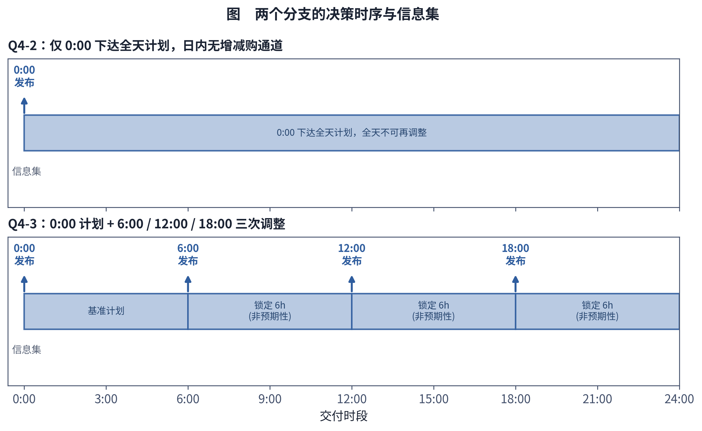
因果性作为模型必须满足的硬性质，本文在 4.7.1 节用扰动实验直接检验：对未释放的信息做扰动后，已经锁定的计划应保持不变。
§4.4.2 费用函数
记 $\delta_t^s = x_t^s-B_t$ 为情景 $s$ 下时段 $t$ 的净调整量（正为增购、负为减购），其正、负部分为 $(\delta_t^s)^+=\max(\delta_t^s,0)$、$(\delta_t^s)^-=\max(-\delta_t^s,0)$。按结算口径（4.2 节假设 H2），计划部分按交付时段实际电价 $p_t^s$ 结算，增购部分按 $\mu^+p_t^s$ 结算，减购（取消）部分按"净额退款"处理：日末对最终有效购电量相对 0:00 基准计划一次性结清，等价于对取消的量只收取 $(1-\mu^-)$ 比例的净费用（付 $\mu^-=0.5$ 倍电价的违约金，相当于该部分净退回 $1-\mu^-=0.5$ 倍电价）。于是情景 $s$ 、时段 $t$ 的购电分项费用为：
其中 $\mu^+=1.5$，$\mu^-=0.5$。对 Q4-2，$\delta_t^s\equiv0$，(4-2) 退化为 $\text{cost}^{\text{buy}}_{t,s}=p_t^s B_t$。
加上紧急购电（$\lambda=5$ 倍电价）分项费用 $\lambda\,p_t^s\,g_t^s$，情景 $s$ 的全天现金费用为：
库存校正费用在现金费用的基础上，加入期初、期末库存差异按 $v_{E,ref}$ 折算的校正项，以消除"日末把储能清空套现、把成本转嫁给下一天"的会计漏洞：
其中 $v_{E,ref}=0.4125555556$ 元/kWh（取附件 1 最低分时电价除以效率 $\eta$）。本文全文以库存校正费用作为主口径评价指标，现金费用作为分量单独报告（两种口径的区分见 4.6.3 节）。
§4.4.3 两阶段情景随机线性规划
给定情景集 $\mathcal S$（$|\mathcal S|=12$，权重 $\omega_s$）及其非预期性结构 (4-1)，第四问的日前—日内联合决策问题可写成如下两阶段情景随机线性规划：
目标函数（对每个自然日，最小化期望库存校正费用，等价于最小化期望现金费用与终端价值函数之差）：
其中 $\theta^s$ 是 4.4.5 节将引入的、精确表示终端库存价值 $V(E_{144}^s)$ 的辅助变量。约束条件如下：
（a）逐时段电量平衡：
（4-6）左边为全部供给来源（购电 $x_t^s$、放电 $r_t^s$、紧急购电 $g_t^s$）减去全部占用去向（充电 $c_t^s$、弃电 $u_t^s$），右边为需要满足的净负荷 $L_t^s$；对 Q4-2，(4-7) 中 $\delta_t^{+,s}=\delta_t^{-,s}\equiv0$。
（b）储能 SOC 动态：
（c）SOC 安全区间：
（d）充、放电功率上限：
（e）非预期性约束： 即 (4-1)（Q4-3），或对 Q4-2 恒有 $\delta_t^{+,s}=\delta_t^{-,s}=0$。
（f）非负性：
（g）终端价值嵌入约束： 见 (4-14)–(4-15)（4.4.5 节）。
模型的决策变量按物理含义可归为购电（含计划与调整）、充电、放电、紧急购电、弃电、库存六类，与 4.5 节所述"真下界"单个大规模 LP 中"每个时段 6 个变量"的结构一致。
§4.4.4 联合情景生成与 k-medoids 带权削减
为保留价格与净负荷的相关结构（4.1 节困难 1），情景生成不对二者分别做边缘抽样，而是按历史同一天成对抽取价格与净负荷的残差路径：对历史某一天 $d'$，同时取出该日全天 144 个时段的价格残差序列与净负荷残差序列，叠加到当前预测的中心路径上，构成一条候选情景路径 $(L_{1:144}^{(d')},p_{1:144}^{(d')})$。这样，只要历史上"高价日恰好也是高负荷/低光伏日"的相关性存在，抽取出的情景就会自动保留这种同涨同跌的联合结构，而不需要额外估计相关系数矩阵。
每个决策日使用此前 28 条历史残差路径构造候选情景，若全部代入两阶段 LP 会使问题规模随候选数线性增长、求解变慢。为此采用 k-medoids 带权场景削减：以每条候选路径为一个点（在价格—负荷联合路径空间中定义距离度量），用 k-medoids 聚类挑出 $|\mathcal S|=12$ 个具有代表性的"中心情景"（medoids），并将每个中心情景的权重 $\omega_s$ 设为其所属聚类簇内全部候选路径数量占比之和（即带权削减，而非简单等权平均），从而在保留概率质量分布形状的同时，把情景规模由 28 条候选路径压缩到 $|\mathcal S|=12$ 条，落在两阶段 LP 可高效求解的量级。
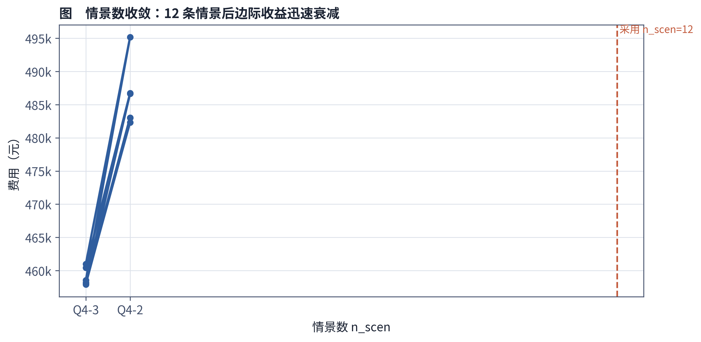
§4.4.5 分段线性凹终端库存价值 V(E) 的 Bellman 回代拟合
由于评价期是 334 天的顺序前推回放，若把每一天都当作独立的、终端库存"零价值"的单日优化问题来求解，模型会在每天日末倾向于把储能放空以避免"浪费"库存持有成本，这是一种典型的有限日历短视（end-of-horizon effect），会系统性地低估储能的跨日连续价值。为纠正这一偏差，本文引入终端库存价值函数 $V(E)$，通过一次 Bellman 回代（backward induction）拟合得到，并在整个评价期内固定使用（对应 4.2 节假设 H7、H9）：从某个终止日开始，向前递推计算"以库存 $E$ 结束当天、此后按最优策略运行剩余天数"所对应的期望继续成本节省，将其对若干个库存取值点求出，再用分段线性函数拟合。具体地，Bellman 回代在 SOC 网格 1,200–10,800 kWh 上取 ngrid = 21 个等距网格点（步长 480 kWh）估值，再拟合为 $K=8$ 段的分段线性凹函数 $V(E)$；各段边际价值单调非增，故凹性成立。其各段斜率 $a_k$（即"每多存 1 kWh 库存额外带来的继续价值"，边际库存价值）满足：
即边际库存价值非增——储能库存越接近上限，再多存 1 kWh 带来的未来价值增量越小（收益递减）。
为什么"边际非增"能保证精确嵌入 LP。 斜率非增的分段线性函数是凹函数，可以等价地表示为有限个仿射函数的逐点最小值：
在两阶段 LP 的目标函数 (4-5) 中，用一个自由（不设符号约束）的辅助变量 $\theta^s$ 代表 $V(E_{144}^s)$，并加入约束：
由于目标函数中 $\theta^s$ 以 $-\theta^s$ 计入成本（相当于"最大化 $\theta^s$"的方向），最小化目标会把 $\theta^s$ 推至 (4-14) 这 $K$ 条上界中最紧的那一条，即在最优解处恰好取到
从而无需任何额外处理即可在 LP 内精确（而非近似）还原出 $V(E)$ 的真实取值。这一结论成立的关键条件正是 (4-12) 的边际非增性，即 $V$ 的凹性：若某个中间段的斜率反而高于前一段（边际先减后增），则 (4-13) 的逐点最小值只能给出原函数的凹包络而不再等于原函数本身，(4-14)–(4-15) 求出的 $\theta^s$ 会停在错误的分段上；此时若要精确表示一般的非凹分段函数，通常需要引入分段选择的 0-1 变量并转化为 MILP，其一般情形的最坏时间复杂度显著高于线性规划。这正是本节强调"分段线性凹"（边际非增）这一性质的建模价值所在：它使模型在不牺牲精确性的前提下，仍然是一个可由成熟求解器高效求解的线性规划。
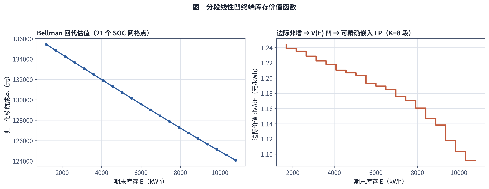
§4.4.6 参数搜索层（模因算法：GA/DE/SA + Nelder-Mead）
规划层 (4-5)–(4-15) 中的决策变量都是连续的、由 LP 精确求解得到，但两个分支各自还包含若干非凸的策略级参数，它们不是 LP 的决策变量，而是决定"如何把情景层输出转化为规划层输入、以及规划层输出如何被 Q4-2/Q4-3 的实时反馈规则重新解释"的元参数，其对样本外费用的映射关系高度非线性、非凸，无法写成 LP 约束：
- Q4-3 主策略 HYBRID 的六个参数：temper（退火/软化系数）、shrink_net（净负荷收缩系数）、shrink_price（价格收缩系数）、kappa（风险厌恶/调整强度系数）、threshold（触发调整的阈值）、adj_premium（调整溢价系数）；
- Q4-2 主策略采用分位法，只有一个一维参数 $\alpha$（用于把储能/紧急购电的触发规则设定在净负荷分布的第 $\alpha$ 分位点上）。
对这些参数，本文采用模因算法（memetic algorithm，即全局搜索与局部搜索相结合的混合元启发式）：先由一个全局搜索算子在参数空间中做广度探索（exploration），再把其最优候选解输入 Nelder-Mead 单纯形法做局部精修（exploitation），得到最终冻结的参数取值。全局算子在遗传算法（GA）、差分进化（DE）、模拟退火（SA）三者中按同一评估预算三选一（本文实际运行采用 GA；三者不并行、也不在同一次搜索内轮流更新，代码入口见 code/hybrid_search.py）。搜索预算为：GA 种群规模 pop = 16、进化 gens = 8 代，其后接 Nelder-Mead 精修 maxiter = 30 次。Q4-3 实际消耗 219 次适应度评估、约 2,150 秒；Q4-2 消耗 191 次评估、约 410 秒。
参数标定的目标函数（适应度）在 2025 年 1 月的三个滚动验证块（1/8–1/15、1/16–1/23、1/24–1/31）上取平均，标定得到：
- Q4-3 主策略 HYBRID：temper=0.4732，shrink_net=0.55，shrink_price=0.7621，kappa=1.0584，threshold=237.09，adj_premium=1.2342，对应 1 月训练适应度 458,569.29；
- Q4-2 主策略：分位法 $\alpha=0.675$（一维标定；在所测试的 $\alpha\in[0.400,0.900]$、步长 0.025 的 21 点网格内取得最优，且最优点位于网格内部而非端点，见
results4/q4_alpha_calibration.csv），对应 1 月训练适应度 479,390.09。
另需如实说明：Q4-2 分支上 HYBRID 结构未能胜过简单的分位法（见 4.6.5 节第 2 条），说明"更复杂的策略结构"并不必然带来更优的样本外表现，尤其是在 Q4-2 缺少日内调整通道、策略自由度本就有限的情形下。
此外，本文还做了 NSGA-II 多目标搜索的对照实验，同时以期望费用与 CVaR（尾部风险）为两个目标搜索 Pareto 前沿。在本文设定的参数范围、搜索预算与数值精度下，获得的非支配解集中于费用—CVaR 平面上的同一点附近，未观察到稳定且可辨识的成本—CVaR 权衡。需要强调：这属于有限搜索条件下的经验现象，只说明在所考察的参数范围与搜索预算内降低期望费用与降低尾部风险的方向高度一致，不构成对全参数空间 Pareto 结构的理论证明，也不能排除搜索多样性不足所致。
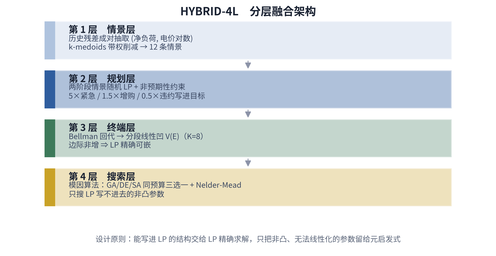
§4.5 模型求解
求解器。 两阶段情景随机 LP（4.4.3 节）与真下界对照 LP（见下文）统一使用开源求解器 HiGHS（同时实现单纯形法与内点法），通过 scipy.optimize.linprog 接口调用，约束矩阵以稀疏 COO 格式组装。
求解规模。 作为规模基准，本文单独构造了一个覆盖全评价期（334 天、48,096 个 10 分钟时段）的单一确定性完美信息 LP，用作"真下界"对照（见 4.6 节）：该 LP 含 $48{,}096\times 6=288{,}576$ 个决策变量（每个时段 6 个变量：购电、充电、放电、紧急购电、弃电、库存），HiGHS 求解耗时约 5–6 秒（Q4-2 6.15 秒、Q4-3 4.94 秒），说明该问题的线性结构在现代求解器实现下具有很好的可扩展性。逐日、逐次滚动更新的两阶段情景 LP（12 个情景 × 144 个时段规模）单次求解的具体变量数与平均耗时为单次两阶段随机 LP 的变量数为 $3n + S\\cdot 8n + S\\cdot K$，代入 $n=144$、$S=12$、$K=8$ 约 14,300 个变量；全期 334 天顺序前推回放的总求解耗时为样本外全分支重建约 14.5 分钟；消融与敏感性 23 个算例合计约 82 分钟。
算法流程。 HYBRID-4L 框架在评价期内按日顺序前推回放，对每一天 $d=1,\dots,334$ 重复如下步骤：
- 情景生成：以当前已知的天气/负荷/价格预报为中心路径，按历史同一天成对抽取价格—净负荷残差路径，构造候选联合情景集合（4.4.4 节）；
- 情景削减：对候选情景集合做 k-medoids 带权聚类，削减至 $|\mathcal S|=12$ 个代表情景及其权重 $\omega_s$；
- 终端价值代入：读取预先由 Bellman 回代拟合并冻结的分段线性函数 $V(\cdot)$（4.4.5 节），生成约束 (4-14) 所需的 $(a_k,b_k)$ 系数；
- 0:00 求解一阶段 LP：调用 HiGHS 求解 (4-5)–(4-15)，得到当日购电计划 $B_t$ 及各情景下的初步储能/紧急购电/弃电安排；
- 逐决策时点的信息释放与（仅 Q4-3）再决策：对 Q4-3，在 6:00 / 12:00 / 18:00 三个决策时点，用已实现的净负荷/价格更新信息集 $\mathcal F_{\tau_k}$，对剩余未交付时段重新求解满足非预期性约束 (4-1) 的调整量 $\delta_t^{+,s},\delta_t^{-,s}$；对 Q4-2 跳过本步；
- 参数应用：将 4.4.6 节冻结的策略参数（HYBRID 六参数或 $\alpha$）代入第 4/5 步的求解过程，决定触发调整、储能充放电优先级等规则；
- 真实路径回放结算：用当天真实实现（而非情景近似）的净负荷与价格，按 (4-2)–(4-4) 结算当日现金费用与库存校正费用，记录储能真实 SOC 轨迹作为下一天的期初库存 $E_0$；
- 滚动前推：$d\leftarrow d+1$，重复步骤 1–7，直至完成 334 天。
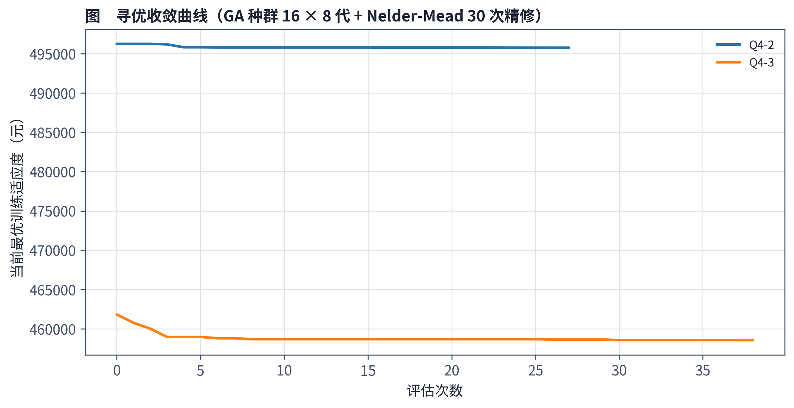
计算复杂度。 单个两阶段情景 LP 是标准线性规划，内点法对线性规划有多项式时间的理论保证（单纯形法虽在实践中高效，但不宜笼统宣称具有多项式时间保证）；工程上，HiGHS 在本文的规模（数千到数万变量量级）下经验求解时间通常为亚秒到秒级（对照真下界 LP 的 5–6 秒是 288,576 变量的规模，逐日滚动 LP 规模远小于此）。全流程的主要计算开销集中在情景生成与 k-medoids 削减（需要遍历历史残差路径库并做距离计算）和参数搜索层的元启发式迭代（全局算子与 Nelder-Mead 需要反复重跑三个滚动验证块上的完整回放以评估适应度），但这部分只在 1 月标定阶段发生一次，评价期内 334 天的回放使用已冻结参数，不再重复搜索。
§4.6 结果与分析
§4.6.1 样本外结果总览
两个分支在评价期（334 天）内的样本外表现如下（单位：元）。为避免混淆，全文正文、图表与结果文件统一使用同一套策略标签：B0 为分位法 $\alpha=0.60$ 基线、B1 为"把波动电价当作固定分时电价"的对照、M2 为 Q4-2 主策略（分位法 $\alpha=0.675$）、H2/H3 为两分支的 HYBRID-4L、U2/U3 为冻结策略下的完美电价替换对照、W2/W3 为滚动视野完美信息对照、A3 为 Q4-3 关闭日内更新的消融、X3 为超出预设参数范围的未采纳候选解；对应的逐日账本文件为 results4/q4_daily_<分支>_<标签>.csv。
Q4-2 分支
| 方法 | 现金费用 | 库存校正费用 |
|---|---|---|
| B0 分位法 $\alpha=0.60$（沿用第三问标定） | 15,586,991.42 | 15,585,897.85 |
| M2 分位法 $\alpha=0.675$（主策略） | 15,128,648.30 | 15,127,539.71 |
| B1 当作固定分时电价 | 15,178,371.39 | 15,177,074.41 |
| H2 HYBRID-4L | 15,151,527.92 | 15,152,826.36 |
| U2 主策略 + 完美电价 | 15,055,218.51 | 15,054,879.10 |
| W2 滚动视野完美信息对照 | 12,839,583.39 | 12,841,236.28 |
Q4-3 分支
| 方法 | 现金费用 | 库存校正费用 |
|---|---|---|
| B0 分位法 $\alpha=0.60$（基线） | 14,146,478.81 | 14,145,416.14 |
| B1 当作固定分时电价 | 14,177,316.34 | 14,176,067.99 |
| H3 HYBRID-4L（主策略） | 14,029,554.00 | 14,028,199.24 |
| U3 主策略 + 完美电价 | 13,920,210.93 | 13,919,168.40 |
| W3 滚动视野完美信息对照 | 12,832,085.90 | 12,830,984.55 |
| A3 HYBRID 不做日内更新 | 15,278,750.70 | 15,277,271.32 |
| X3 1 月无约束最优（shrink 超范围·未采纳） | 14,210,791.38 | 14,210,031.74 |
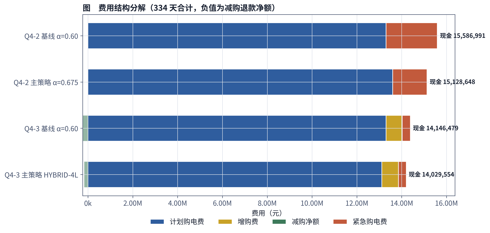
§4.6.2 关键增益
- Q4-2：把分位数参数由沿用第三问标定的 $\alpha=0.60$ 重新标定为 $\alpha=0.675$ 后，库存校正费用降低 458,358 元（−2.94%），逐月 11/11 个月均为正向节省；
- Q4-3：HYBRID-4L 主策略相对 $\alpha=0.60$ 基线降低 117,216.90 元（−0.829%），逐月 10/11 个月为正；
- Q4-3 主策略的应急（紧急购电）电量为 64,758.94 kWh，低于基线的 70,827.63 kWh，说明 HYBRID-4L 减少了对最贵购电通道（5 倍电价）的依赖；
- 日内更新的价值（Q4-3 主策略 vs A3 不做日内更新）= $15{,}277{,}271-14{,}028{,}199=$ 1,249,072 元（8.0%），是第四问中最大的单项收益来源，直接呼应 4.1 节关于"日内调整能力在波动电价下价值被放大"的分析。
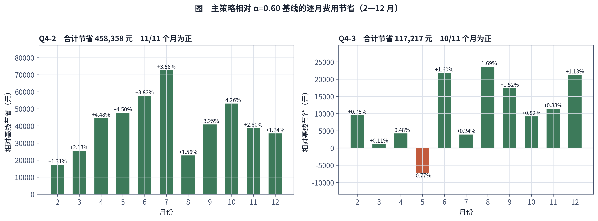
§4.6.3 与真下界的差距
本文单独构造了覆盖全评价期的完美信息单一 LP（48,096 段 × 6 变量 = 288,576 变量，HiGHS 约 5–6 秒求解，见 4.5 节）作为"真下界"。需要严格区分两种口径：
- 库存校正口径下界：Q4-2 12,782,823.86 元；Q4-3 12,782,827.41 元；
- 现金口径下界（终端估值置零、单独最小化现金得到）：Q4-2 12,781,171.37 元；Q4-3 12,781,144.41 元。
三个量必须分开：含终端估值目标的最优值 12,782,823.86／12,782,827.41 元是库存校正口径的下界；该最优解的现金分量为 12,781,203.22／12,781,176.26 元，它只是这一个解的一个分量，不是现金最小值；把终端估值置零后单独最小化现金，才得到现金口径下界 12,781,171.37／12,781,144.41 元，比前者低 31.85／31.85 元。本文主口径比较一律用库存校正费用。
这两个下界不是同一个最优解的两个分量——含终端估值项的最优解，其现金分量并不等于单独最小化现金费用所得到的现金下界，因此不能把前者的现金分量称为"现金最小值"。
主策略距真下界的差距为：Q4-2 2,344,715.85 元（15.50%）；Q4-3 1,245,371.83 元（8.88%）。作为参照，本文另外报告了滚动视野完美信息对照（W2/W3）：它虽然使用完美价格与完美净负荷信息，但仍然受限于 24 小时滚动视野与终端代理价值的近似约束，因此不是真下界，其库存校正费用分别比真下界高 58,412.43 元（Q4-2）与 48,157.15 元（Q4-3）。
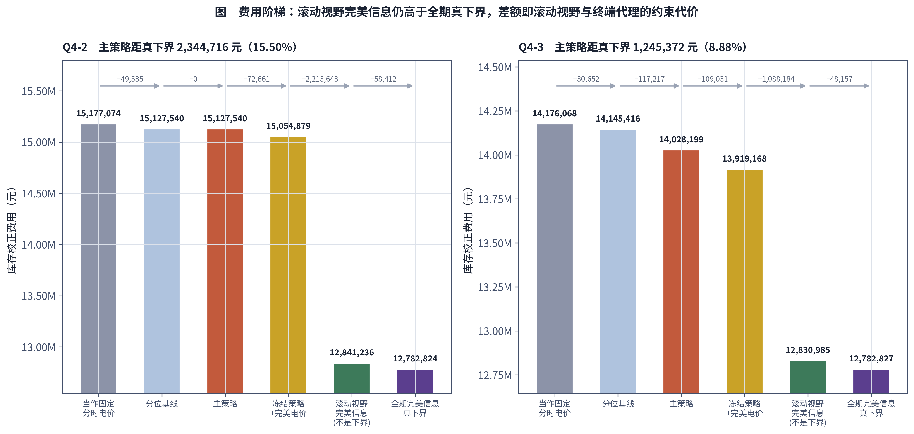
§4.6.4 风险统计
采用精确经验 CVaR（而非近似的"最高若干日均值"）度量尾部风险：将 334 个等概率日损失（费用）按降序排列为 $C_{(1)}\ge C_{(2)}\ge\cdots\ge C_{(334)}$，取
其中系数 16.7 与 0.7 来自精确的 5% 尾部质量截断（$334\times5\%=16.7$）。计算得到：Q4-2 主策略 CVaR$_{0.95}=$ 94,181.41 元；Q4-3 主策略 CVaR$_{0.95}=$ 74,840.01 元。作为对照，若使用"最高 17 日均值"这一旧口径（尾部质量 $17/334\approx5.09\%$，并非精确 5%），得到的数值分别为 93,854.97 元与 74,787.26 元——两者接近但不完全等同，本文以 (4-16) 的精确经验 CVaR 为主口径。
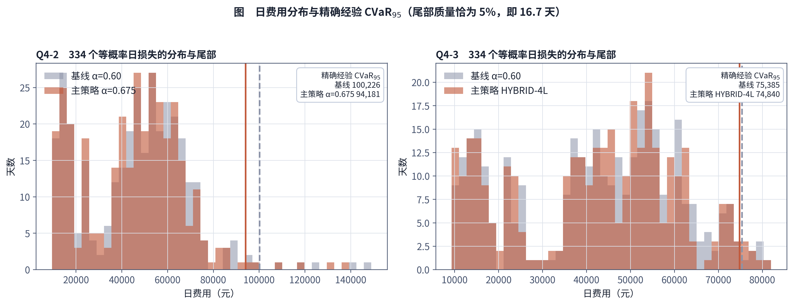
需要如实指出：Q4-3 尾部改善（HYBRID-4L 相对基线的 CVaR 降低量）的 bootstrap 置信区间跨零（具体区间数值为块长 7 日 [−1,302, +519]、14 日 [−1,446, +837]、28 日 [−1,519, +1,314]），因此不能宣称"显著降低尾部风险"。与此相对，对主策略与基线逐日现金费用差的均值检验则显示出统计显著性——沿用第三问的检验方法，配对 $t$ 检验 $p=0.0044$，Wilcoxon 符号秩检验 $p=1.2\times10^{-10}$，说明平均意义上的费用节省不是抽样噪声，但这一显著性结论不能延伸到尾部风险（CVaR）的改善，二者必须分开陈述。
§4.6.5 模型解释边界与稳健性说明
1. 参数标定与泛化边界。 本文的参数标定窗口仅为 2025 年 1 月的三个滚动验证块，窗口偏短。在参数搜索中记录了两个"训练窗口内目标值更低、但后续回放费用更高"的候选解：Q4-2 放宽 shrink 范围后的候选解（shrink_net=0.298）1 月训练适应度为 475,899，低于最终方案的 479,390.09，但其评价期库存校正费用为原实验记录值 15,807,845 元；Q4-3 超出预设参数范围的候选解（shrink_net=0.215，即 4.6.1 节表中的 X3）训练适应度为 456,873.19，低于最终方案的 458,569.29，但评价期库存校正费用为 14,210,031.74 元。两者分别相对各自分支的 B0（分位法 $\alpha=0.60$）基线高 1.42% 与 0.46%。这些结果表明，在仅含 1 个月、3 个滚动验证块的短标定窗口下，仅依据训练适应度选参存在明显的泛化失败风险。预先限定参数范围、降低参数维度或采用其他正则化手段可以降低该风险，但不能保证完全消除过拟合。
本文采用的正则化是给 shrink 系列参数设定取值范围（Q4-2 四维搜索用 $[0.55,1.30]$，Q4-3 用 $[0.30,1.60]$）。该范围属于人为设定的正则化约束，其经济解释是：shrink 是对两阶段 recourse 乐观偏差的修正系数，把经验残差尺度大幅改变就不再是"修正"而是自由拟合。此处必须如实说明取舍的来源：参数取值只在 1 月窗口上标定并在评价期回放前冻结（4.2 节假设 H9），但参数范围与模型结构的选择受到了历史回放稳定性实验的影响，其中包括上述两个候选解的回放表现。因此，本文的评价期结果不构成严格独立盲测，而主要用于比较候选策略在同一历史样本上的回放稳定性；文中报告的样本外差异不应解释为完全独立的泛化性能证明。
2. 复杂策略的适用边界。 Q4-2 分支上 HYBRID 结构未能胜过简单的分位法：H2（HYBRID-4L）库存校正费用 15,152,826.36 元，高于 M2（分位法 $\alpha=0.675$）的 15,127,539.71 元，最终以 M2 作为 Q4-2 的主策略。该结论只适用于本文的数据、情景规模与搜索预算，说明更复杂的策略结构在信息通道受限（无日内调整）的分支上并不必然带来收益，而不能推广为"随机规划在缺乏日内调整通道的场景下普遍无效"。
3. Q4-2 的补救决策结构。 Q4-2 确实没有日内增/减购的普通调整通道，但每个情景下仍然拥有独立的充电、放电、弃电、库存与紧急购电变量（见 4.4.1 节末尾说明），因此 Q4-2 仍包含 recourse。需要同时承认：当前两阶段 LP 的情景内决策是在给定该情景完整路径的条件下求解的，不能等同于现实中逐时段信息反馈的策略，可能带来乐观的前视近似。另外，Q4-2 固定 shrink=1（不对净负荷/价格做额外收缩）是短训练窗口下为控制估计不稳定性而采取的工程性降维/正则化选择，不是结构性定理。
4. 信息价值指标的命名边界。 本文报告的"融合策略相对分位基线的历史回放费用差"（如 Q4-3 的 117,216.90 元/0.829%）并非严格意义上的 VSS，因为分位法不是同一随机规划模型的期望值替代问题，且两类策略的参数标定口径并不完全一致。U2/U3 则是在保持策略结构及参数冻结的条件下，把决策阶段可获得的价格预测替换为未来真实价格路径后得到的历史回放费用改善，结算仍按真实实现价格进行（实现见 code/q4_policy.py 中 price_mode='perfect' 只改写 price_paths() 给出的情景中心路径，不改变 (4-2)–(4-4) 的结算价）；该试验没有证明策略达到完美信息条件下的全局最优，因此也不构成严格定义的 EVPI。本文仅把 0.48%（Q4-2）与 0.78%（Q4-3）解释为冻结策略下的价格信息敏感性结果，不将其解释为理论 EVPI，也不据此推断电价预测投入的经济性上限。
5. 结算口径敏感性。 主口径按交付时段实际电价计算增购溢价与减购违约金（4.2 节假设 H2）。若改按下单（发布）时刻电价计价，则在部分"发布时刻—后续可调整交付时段"配对中，$1.5p_{\tau}^{\mathrm{release}}$ 仍可能低于对应的 $p_t^{\mathrm{delivery}}$。按 4.4.1 节的调整窗口定义逐对计算（发布时刻 $\tau\in\{6{:}00,12{:}00,18{:}00\}$，其可调整交付时段为同日 $t\in[6h,144)$，发布价取该时刻已公布的实际电价，评价期 334 天），共 72,144 个有效配对中有 19,412 个满足 $1.5p_{\tau}^{\mathrm{release}}results4/q4_release_pricing_pairs.csv。）
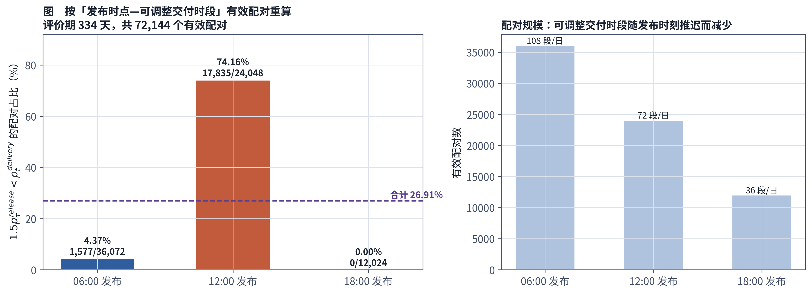
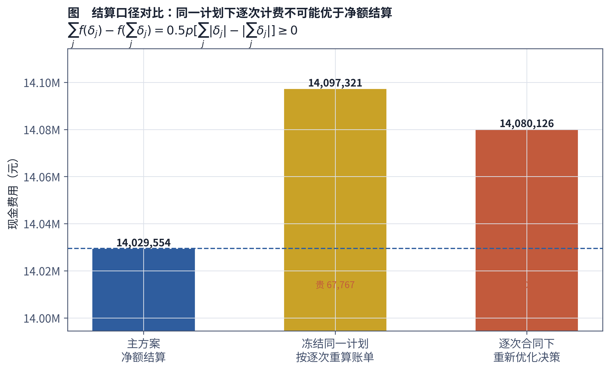
此外，减购口径本身也做了并列对照：主口径为日末净额退款（net_refund）；若改为逐次调整分别计费（stepwise，每次调整均以上一次有效计划为基准单独计费），在同一合同下重新优化决策后，Q4-3 的现金费用为 14,080,126.50 元、库存校正费用为 14,078,771.73 元，比主口径贵 50,572.49 元；若冻结主口径计划仅重算账单，则为 14,097,321.00／14,095,966.23 元，贵 67,766.99 元。二者的先后关系由下述不变量保证：记同一交付时段的多次有符号调整为 $\delta_j$，$f(\delta)=p[1.5\max(\delta,0)-0.5\max(-\delta,0)]=p\delta+0.5p|\delta|$，则 $\sum_j f(\delta_j)-f(\sum_j\delta_j)=0.5p(\sum_j|\delta_j|-|\sum_j\delta_j|)\ge 0$，即同一计划下逐次计费不可能比净额结算便宜；重新优化可以收回一部分差额，但不可能反超。
6. 因果性与统计检验的边界。 对 3 天 $\times$ 4 个发布时点（0:00、6:00、12:00、18:00）共 12 次检查，扰动决策时刻尚未释放的负荷、光伏、电价预报后重新求解，已经锁定的计划变动量均为 0.0 kWh（详细协议见 4.7.1 节）。该结论只支持被实际测试的日期与时点，不等于对全部 334 天的形式化证明。统计检验方面：均值改善的配对检验与 CVaR 尾部改善是两个不同命题，不能用前者的显著性替代后者；4.7.4 节的 bootstrap 结论以修复后的重采样实现为准，并依赖日费用序列的局部平稳近似。
§4.7 模型检验
§4.7.1 因果性检验
按 4.4.1 节 (4-1) 定义的非预期性约束，模型在任一决策时点之前锁定的计划不应因为"未来将要发生但当前尚未公布"的信息而改变。检验方法：随机抽取 3 天，对每天的 4 个发布时点（0:00、6:00、12:00、18:00），分别对该时点尚未释放的净负荷、光伏出力、电价预报施加扰动，重新运行同一套决策流程，比较扰动前后已经锁定部分的计划购电量。3 天 $\times$ 4 个发布时点共 12 次检查，结果显示计划变动量均为 0.0 kWh，即模型的决策严格只依赖于截至当前决策时点已公开的信息集 $\mathcal F_{\tau_k}$，不存在信息泄漏或"先知式"决策。
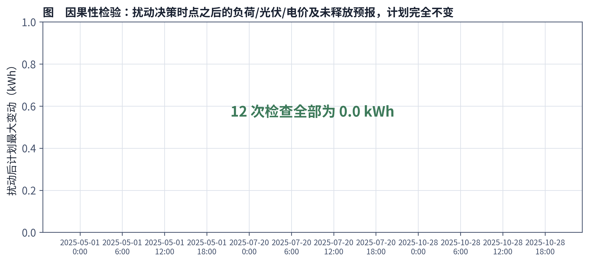
§4.7.2 账单重算与储能动态校验
为验证 4.4.2 节费用公式 (4-2)–(4-4) 与 4.4.3 节储能动态 (4-8) 在真实路径回放中被正确执行，本文对评价期内的每日结算独立重算账单（按真实实现的净负荷、价格代入 (4-2)–(4-4)），并逐时段校验储能 SOC 轨迹是否满足动态方程 (4-8) 与安全区间约束 (4-9)。校验结果为：日账单最大重算误差 Q4-2 2.599e-05 元、Q4-3 1.728e-05 元；电量平衡最大误差 1.333e-06 kWh；储能动态最大误差 1.444e-06 kWh；充放电功率与电价核对误差均为 0.0。
交付工作表另做两层核对，因为仅核对电量不足以证明费用列正确：（i）电量层面，Excel 计划表/调整表与逐段账本的最大差为 0.0 kWh；（ii）费用层面，两簿各逐日明细表末列的合计与逐日账本对应费用列之差为 0.0 元，「费用汇总与版本」页的计划购电费、增购费、减购净额、紧急购电费四个分项与逐日账本之差亦均为 0.0 元。全部核验项通过（明细见 results4/q4_verification.json 的 *_sheet_cost_detail）。
§4.7.3 消融与敏感性
- 日内更新通道的消融：对比 Q4-3 主策略（H3）与"HYBRID 不做日内更新"（A3）：库存校正费用由 15,277,271.32 元降至 14,028,199.24 元，差额 1,249,072 元（8.0%），是本文能够单独归因、量级最大的结构性收益，说明日内调整通道本身（而不仅是参数调优）在波动电价下具有实质价值（呼应 4.1 节的问题分析）。
- 策略结构的消融：对比 Q4-2 的 HYBRID-4L（H2，15,152,826.36 元）与分位法主策略（M2，15,127,539.71 元），前者反而更贵，说明在无日内调整通道的约束下，HYBRID 结构的额外自由度没有转化为样本外收益（见 4.6.5 节第 2 条）。
- 正则化先验范围的敏感性：分别使用较窄（$[0.55,1.30]$，Q4-2）与较宽（$[0.30,1.60]$，Q4-3）的 shrink 先验范围搜索，均在范围边界之外发现了"1 月训练适应度更优、评价期回放费用更高"的候选解（见 4.6.5 节第 1 条），说明评价期表现对该范围的选择敏感；该范围是人为设定的正则化约束而非理论边界，且其设定用到了历史回放信息（见 4.6.5 节第 1 条）。
§4.7.4 Bootstrap 不确定性
对 Q4-3 主策略相对基线的 CVaR$_{0.95}$ 尾部改善量做配对移动区块 bootstrap 重采样。重采样实现的要点为：合法块起点覆盖 $0$ 至 $n-L_b$（共 $n-L_b+1$ 个），抽取块数取 $\lceil n/L_b\rceil$，拼接后截断到恰好 $n=334$ 个观测；重采样次数 4,000，随机种子固定为 20260941，块长取 $L_b\in\{7,14,28\}$ 日；置信区间取重采样分布的 2.5%/97.5% 分位，并与 4.6.4 节 (4-16) 调用同一个精确经验 CVaR 统计函数（code/q4_statistics.py），以保证正文指标与统计检验指标口径一致。
所得 95% 置信区间为：块长 7 日 [−1,302, +519]、14 日 [−1,446, +837]、28 日 [−1,519, +1,314]（见 results4/q4_cvar_bootstrap.csv）。由于三档区间均跨越零点，本文在给定重采样设定下不能认定 Q4-3 的尾部风险改善具有统计显著性。作为对照，Q4-2 主策略相对 B0 基线的 CVaR$_{0.95}$ 改善为 −6,044.22 元，三档区间分别为 [−9,162, −2,121]、[−9,540, −2,258]、[−9,766, −3,070]，均不跨零。
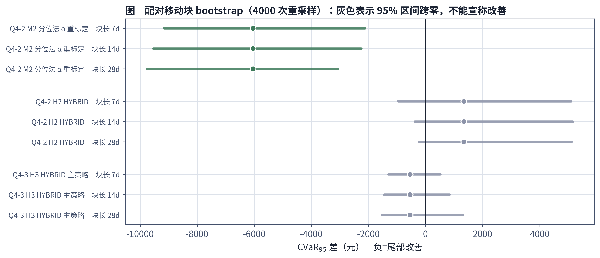
与此相对，Q4-3 逐日现金费用差的均值改善通过配对 $t$ 检验（$p=0.0044$）与 Wilcoxon 符号秩检验（$p=1.2\times10^{-10}$）验证为统计显著。均值改善的显著性不能延伸到尾部风险（CVaR）的改善，二者是不同命题，须分开陈述。此外需说明：日费用序列可能存在季节性，移动区块 bootstrap 依赖局部平稳近似，上述区间的有效性以该近似成立为前提。
§4.7.5 泛化失败的两次事后诊断
如 4.6.5 节第 1 条所述，本文在参数搜索过程中记录了两个"训练窗口内目标值更低、但后续回放费用更高"的候选解：Q4-2 放宽 shrink 范围后的候选解（1 月训练适应度 475,899 → 评价期库存校正费用相对该分支 B0 基线高 1.42%，未采纳）与 Q4-3 超出预设参数范围的候选解（1 月训练适应度 456,873.19 → 相对该分支 B0 基线高 0.46%，未采纳）。
这两个候选解之所以未被采纳，直接依据是它们落在 shrink 参数的正则化取值范围之外；而该范围的设定，如 4.6.5 节第 1 条所述，受到了包括上述回放结果在内的历史回放稳定性实验的影响。因此本文不把这两条记录称为"独立留出检验"，而只把它们视为在同一历史样本上对短标定窗口泛化风险的经验证据：在 1 个月、3 个滚动验证块的标定窗口下，仅以训练适应度作为选参标准存在明显的泛化失败风险，需要借助参数范围限定等正则化手段加以抑制——但正则化只能降低而不能消除该风险，且范围本身的选择已经用到了历史回放信息，这一自由度必须计入方法的解释边界。
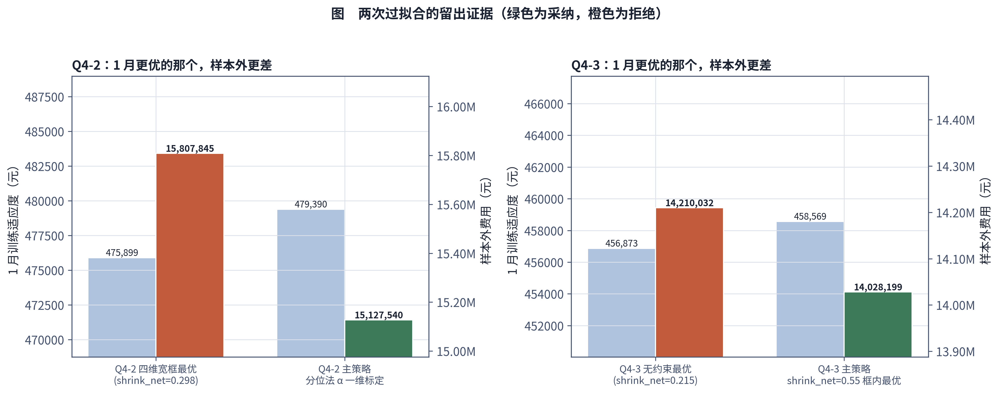
§4.8 模型的优点与不足
优点：
- 情景层用历史同日成对抽取的方式构造联合情景，保留了价格与净负荷的相关结构，避免了独立边缘建模丢失相关性的问题（4.1、4.4.4 节）；
- 规划层显式写入非预期性约束，并通过因果性检验（4.7.1 节，12 次检查计划变动量均为 0.0 kWh）证实模型没有利用未来信息，决策具有可信的因果合法性；
- 终端层用一次 Bellman 回代拟合的分段线性、边际非增（即凹）的终端库存价值函数，能够在不引入整数变量的前提下精确嵌入线性规划（4.4.5 节的证明性说明），兼顾了跨日连续价值与求解效率；
- 搜索层用模因算法（全局算子三选一 + Nelder-Mead 精修）处理规划层写不进去的非凸策略参数，并辅以 NSGA-II 多目标对照，如实报告了"在本文的参数范围与搜索预算内未观察到可辨识的成本—CVaR 权衡"这一有限搜索条件下的经验现象，而非用复杂算法制造虚假的多目标叙事；
- 全文如实记录了两次泛化失败的事后诊断、一个分支上更复杂结构反而失败的反例，以及结算口径选择（1.5 倍条款的两种读法、净额与逐次计费）、下界口径区分等容易被误报的细节，符合可复核的建模报告规范。
不足：
- 参数标定窗口仅为 2025 年 1 月的三个滚动验证块，参数取值虽在评价期回放之前冻结，但参数搜索范围与模型结构的选择曾结合历史全年回放的稳定性表现作过修订，因此评价期结果不构成严格意义上的独立盲测，其表现优势既不能完全排除对 1 月数据分布特征的依赖，也不能解释为对未知年份的泛化保证；
- 主策略距真下界仍有明显差距（Q4-2 15.50%，Q4-3 8.88%），说明模型在信息利用效率上仍有改进空间，尤其 Q4-2 由于缺乏日内调整通道，差距显著大于 Q4-3；
- Q4-2 分支上更复杂的 HYBRID 结构未能超越简单分位法，说明本文的四层融合框架并非在所有信息约束条件下都具有普适优势，其复杂度—收益的权衡在受限信息通道下需要重新评估；
- 情景内部仍然存在一定的前视近似——两阶段 LP 在给定情景路径全长的条件下求解，与现实中信息严格逐段释放存在差距（见 4.6.5 节第 3 条），该近似的误差量级未被单独量化；
- Q4-3 尾部风险（CVaR）的改善未通过 bootstrap 显著性检验（区间跨零），只能报告均值意义上的费用节省具有统计显著性，风险控制方面的收益证据尚不充分；
- 本文未使用严格定义的 VSS/EVPI 指标（理由见 4.6.5 节第 4 条），无法就"电价预测投入的边际性价比"给出具备理论保证的强结论，相关讨论只能停留在冻结策略下回放费用差的经验层面。
综上，第四问所建立的联合情景两阶段随机规划模型，在保持线性规划可精确求解、决策满足因果性的前提下，针对两个分支分别给出了经过样本外验证、并如实报告了失败案例与统计边界的主策略，是在标定数据有限、评价期表现不可提前得知的现实约束下的一个可解释、可复核的折衷方案。